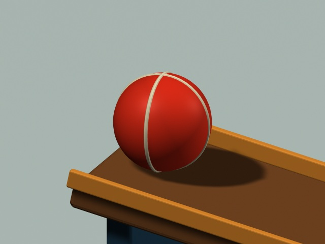
Ball
Rolls down the first ramp and hits the first domino.
A long way to do one small thing. A ball rolls down a ramp and knocks over a row of dominoes. The last domino hits a hinged paddle, which pushes a sled down another ramp. The sled hits a bell.
The action moves from left to right. The camera starts wide, moves closer to follow the chain, and ends on the bell.
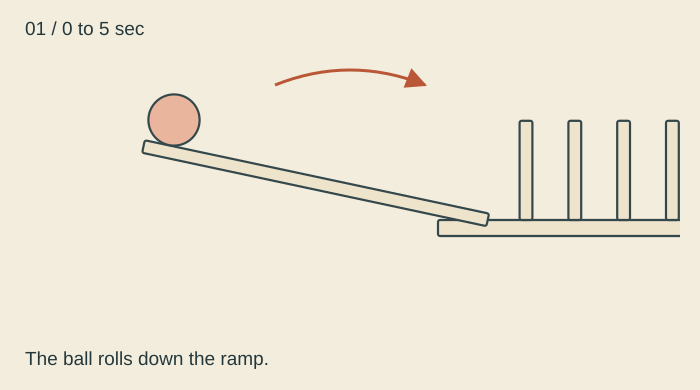
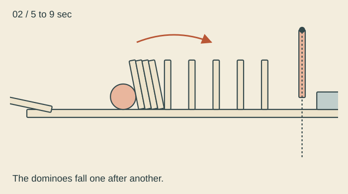
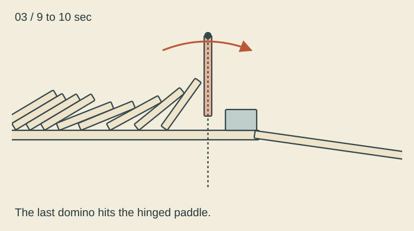
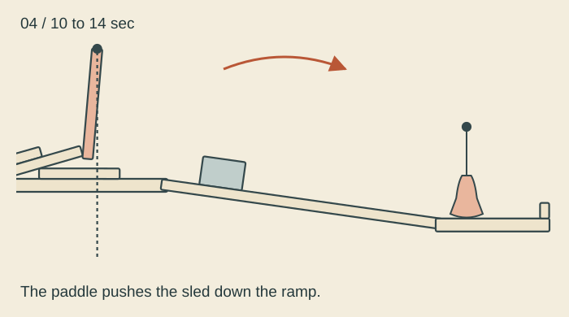
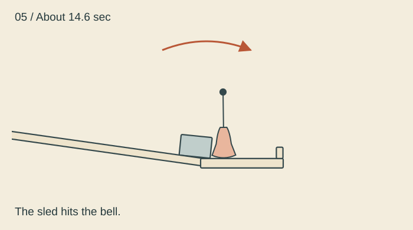
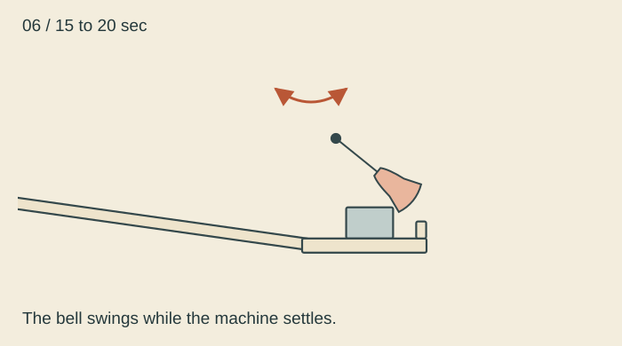

Rolls down the first ramp and hits the first domino.
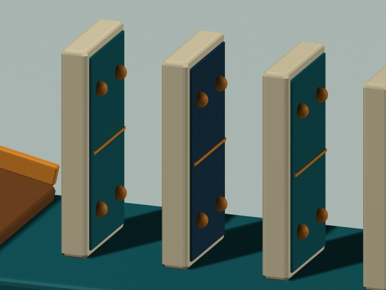
Nine falling dominoes pass the motion down the line.
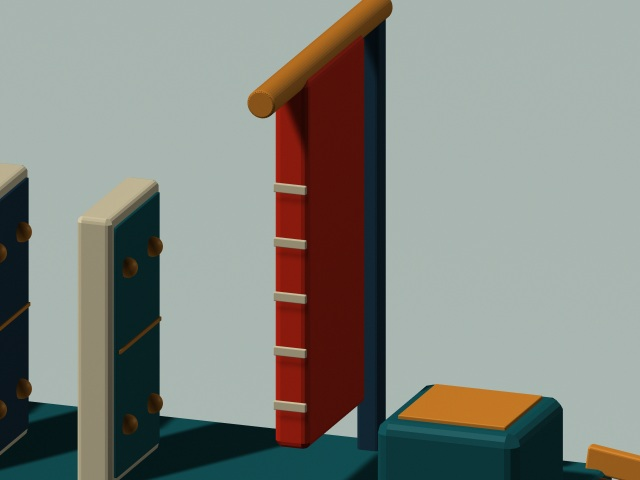
Swings when the last domino hits it, then pushes the sled.
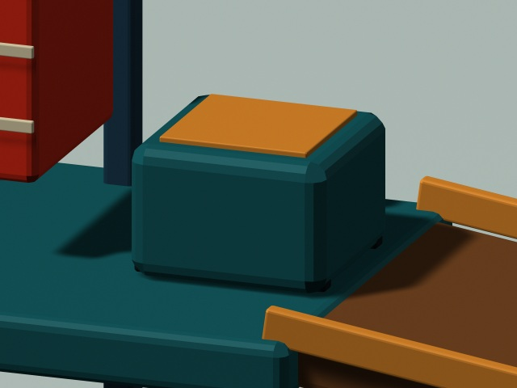
Slides down the second ramp and strikes the bell.
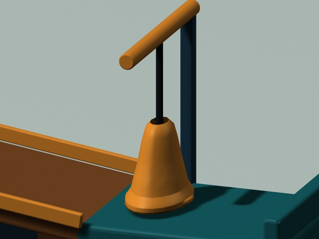
Swings after the sled hits it. This is the final step.
Gravity starts the ball. Each collision transfers motion to the next object. The ramps stay fixed, while the ball, dominoes, sled, paddle, and bell move. Hinges keep the paddle and bell attached to their stands.
The motion comes from a rigid body simulation in Pymunk. It includes gravity, friction, collisions, and hinge joints. The simulation is 2D, so every object moves in one flat plane. I copied the motion into Maya as keyframes and rendered it there. The 10 seconds of simulated motion play at half speed, so the video is 20 seconds long.
The models use wood, teal paint, cream dominoes, a red ball and paddle, and a brass bell. A main light and softer fill light show the shapes, while shadows keep the pieces grounded.
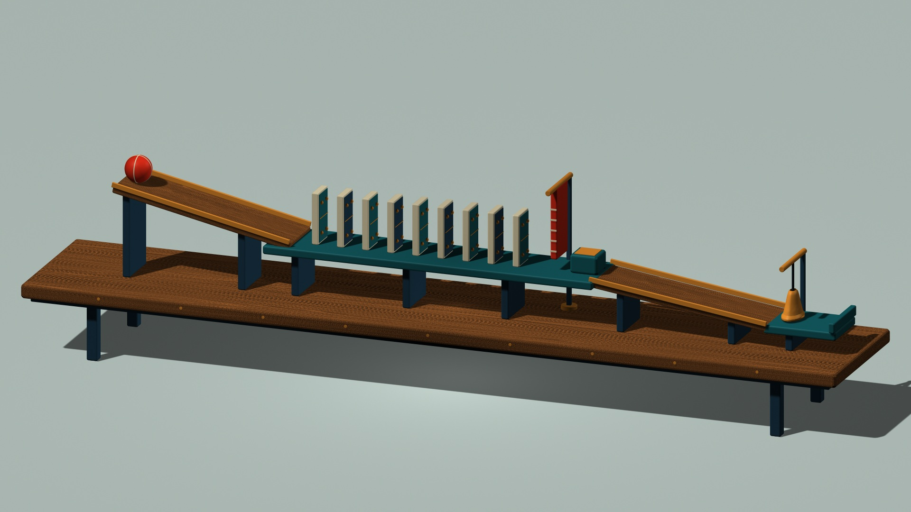